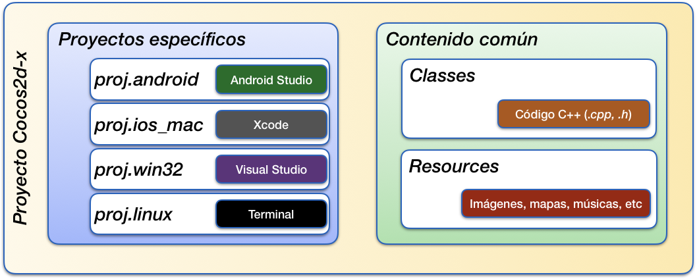
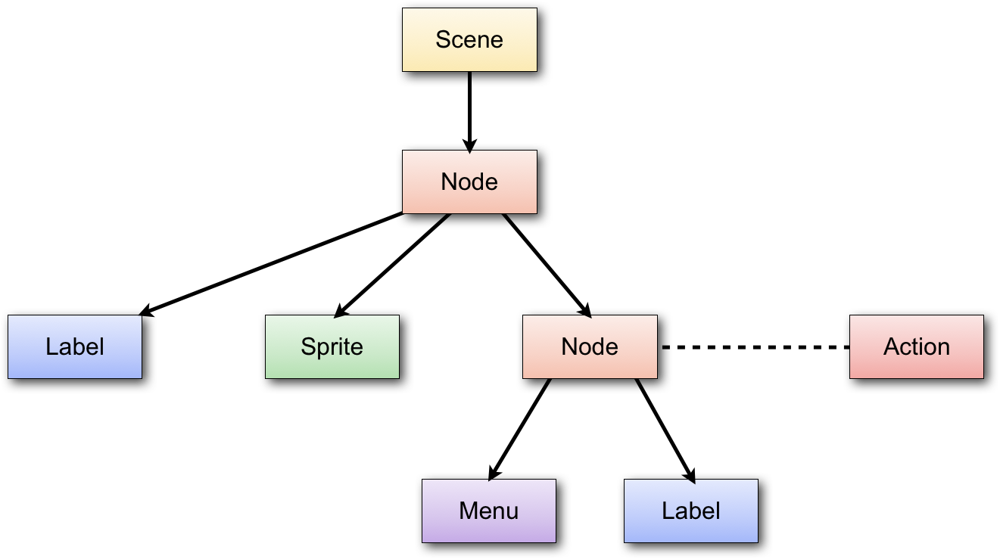

El motor cocos2d-x¶
Uno de los motores más conocidos y utilizados para desarrollo de videojuegos para dispositivos móviles es Cocos2D. Existe gran cantidad de juegos para iOS implementados con este motor. Aunque inicialmente se trataba de un motor escrito en Objective-C únicamente para iOS, actualmente contamos con Cocos2d-x que es la versión multiplataforma de este motor.
El juego se desarrolla con C++, y puede ser portado directamente a distintos tipos de dispositivos (Android, iOS, y plataformas de escritorio).
Vamos a comenzar viendo cómo instalar el motor Cocos2d-x y crear un nuevo proyecto con él.
Instalación de Cocos2d-x¶
Si entramos en la página web de Cocos, veremos que ofrecen dos productos principales:
- Cocos. Herramienta visual de creación de videojuegos. Podremos introducir scripts con lenguajes como Javacript o LUA.
- Cocos2d-x. Framework escrito en C++ para el desarrollo de videojuegos. El videojuego se implementará en clases C++, y dentro de ellas tendremos la opción de cargar contenidos creados con la herramienta anterior o con otras herramientas de terceros.
Nos decantaremos por la segunda opción, para crear videojuegos en C++. Veremos que la API de este motor es muy similar a la que encontramos en motores como SpriteKit y SceneKit, en este caso centrada en contenido 2D.
Instalación de Cocos2d-x¶
Para instalar Cocos2d-x simplemente deberemos:
- Descargar y descomprimir Cocos2d-x en el directorio donde queramos tenerlo instalado.
- En un Terminal, ir al directorio donde hayamos descomprimido el motor y ejecutar:
1
./setup.py
- Nos preguntará por las rutas donde tengamos instalado
ANDROID_SDKyANDROID_NDK. Estas rutas en macOS por defecto son las siguientes, aunque podría cambiar:1 2
ANDROID_SDK=~/Library/Android/sdk/ ANDROID_NDK=~/Library/Android/sdk/ndk-bundle/
De esta manera tendremos acceso a un script llamado cocosque permite entre otras cosas crear la plantilla para un nuevo proyecto Cocos2d-x multiplataforma.
Deberemos proporcionar la siguiente información:
1 2 | cocos new MiJuego -p es.ua.eps.MiJuego
-l cpp
|
Esto nos creará un proyecto (carpeta) MiJuego en el directorio donde nos encontremos, con bundle ID es.ua.eps.MiJuego. El lenguaje utilizado será C++ (-l cpp).
Dentro del directorio generado encontraremos los siguientes directorios:
Classes: Código fuente C++ de nuestro juegoResources: Recursos y assets del videojuego (sprites, efectos de sonido, fuentes, ficheros de datos, etc)
El contenido de los dos directorios anteriores será común para todas las plataformas soportadas por Cocos2d-x. Será en ellos donde introduciremos los distintos componentes del videojuego.
Además, encontraremos una serie de carpetas adicionales con recursos propios de cada plataforma específica:
proj.ios_mac: Recursos para las versiones iOS y Mac basadas en el entorno Xcode.proj.android: Recursos para la plataforma Android (entorno Android Studio)proj.linux: Recursos para la compilación para Linux (se compila desde línea de comando)proj.win32: Recursos para la compilación para Windows (proyecto Visual Studio)

Configuración CMake
Para la construcción de los proyectos se utiliza la herramienta CMake, por lo que es necesario tenerla instalada.
Encontramos además en la raíz del proyecto un fichero CMakeLists.txt en el que se indica la forma de construir el proyecto multiplataforma. En dicho fichero simplemente tendremos que actualizar la lista de clases a compilar. En la plantilla veremos un bloque como el siguiente:
1 2 3 4 5 6 7 8 9 | # add cross-platforms source files and header files list(APPEND GAME_SOURCE Classes/AppDelegate.cpp Classes/HelloWorldScene.cpp ) list(APPEND GAME_HEADER Classes/AppDelegate.h Classes/HelloWorldScene.h ) |
Deberemos ir actualizando este bloque conforme añadamos o eliminemos clases de nuestro proyecto.
Compilación en línea de comando
Tenemos también la opción de compilar y ejecutar el proyecto desde la consola con el comando cocos.
Por ejemplo, si queremos compilar el proyecto para la plataforma macOS, desde el directorio del proyecto podemos hacer:
1 | cocos compile -p mac |
Podemos también ejecutar el proyecto en dicha plataforma con:
1 | cocos run -p mac |
En este caso previamente lo compilará, si fuera necesario.
Podemos compilar y ejecutar para el resto de plataformas disponibles. Puedes ver la documentación de la herramienta de consola de Cocos para más información.
Esta forma de trabajar en línea de comando será la habitual si estamos en entorno Linux y queremos probar el proyecto como aplicación de escritorio Linux.
Pero tenemos la opción de trabajar en otros entornos, como Android Studio (para probar en Android), Xcode (para probar en iOS y Mac) y Visual Studio (para probar en Windows).
Podremos elegir el entorno de desarrollo que nos resulte más conveniente. Hemos de destacar que podremos cambiar de uno a otro sin problemas, ya que el código que introduzcamos estará siempre en carpetas compartidas por todas las plataformas. Podremos elegir el entorno en el que nos encontremos más cómodos, y utilizar el resto sólo cuando queramos hacer pruebas en plataformas específicas.
A continuación vamos a ver cómo trabajar con cada entorno.
Proyecto Android
Desde Android Studio podremos abrir directamente el proyecto que se encuentra en el directorio proj.android.
Podremos construir y ejecutar el proyecto directamenter desde Android Studio, aunque para que la construcción funcione debemos tener instalado el sistema de construcción Ninja. En caso contrario, obtendremos un error durante el proceso de construcción.
Proyecto iOS / Mac
En Cocos2d-x 3.X, dentro del directorio proj.ios_mac encontraremos un proyecto Xcode que podremos abrir directamente con este IDE.
Sin embargo, en Cocos2d-x 4.X será necesario generar un proyecto para las plataformas iOS y Mac utilizando la herramienta CMake:
1 2 3 4 5 6 7 | # Generación del proyecto Xcode para MacOS mkdir mac-build && cd mac-build cmake .. -GXcode # Generación del proyecto Xcode para iOS mkdir ios-build && cd ios-build cmake .. -GXcode -DCMAKE_SYSTEM_NAME=iOS -DCMAKE_OSX_SYSROOT=iphoneos |
Una vez creado el proyecto (directorio mac-build o ios-build) podremos abrirlo con Xcode y trabajar de forma normal con este entorno.
Proyecto Windows
Tenemos también la opción de trabajar en Windows con Visual Studio. Al igual que en el caso de Xcode, con Cocos2d-x 3.X disponemos de dicho proyecto directamente, pero en Cocos2d-x 4.X deberemos generarlo con:
1 2 3 | # Generación del proyecto Visual Studio para Windows mkdir win32-build && cd win32-build cmake .. -G"Visual Studio 15 2017" -Tv141 |
Puedes ver la documentación de CMake en Cocos2d-x 4.0 para más detalles.
Organización del motor¶
En el apartado anterior hemos visto cómo crear un nuevo proyecto Cocos2d-x. Vamos ahora a ver cómo están estructuradas las clases de esto motor.
El singleton Director¶
El elemento central del motor es un singleton de tipo Director, al que podemos acceder de la siguiente forma:
1 | Director::getInstance() |
El director será el encargado de gestionar toda la ejecución del juego, y entre sus funciones se encuentran:
- Tiene una escena activa, y permite realizar transiciones a otras escenar, representadas todas ellas con la clase
Scene. - Gestiona el ciclo del juego, actualizando y renderizando la escena activa en cada iteración. Sólo se actualizará y se mostrará la escena que esté actualmente activa.
Creación de escenas¶
En Cocos2d-x la escena se representa con la clase Scene, y contendrá un árbol de nodos, los cuales están representados por la clase Node. La propia escena es un nodo (Scene es subclase de Node), y tendrá como papel siempre hacer de nodo raíz del árbol de nodos de la escena.
Antes de entrar a estudiar el árbol de la escena, vamos a ver cómo crear una escena. Para crear cada escena (pantalla) del videojuego, crearemos una clase que herede de Scene, como la que vemos a continuación (fichero .h):
1 2 3 4 5 6 7 8 9 10 | // MenuScene.h class MenuScene : public cocos2d::Scene { public: static cocos2d::Scene* createScene(); virtual bool init(); CREATE_FUNC(MenuScene); }; |
Todos los objetos de Cocos2d-x se instanciarán mediante un método create, incluyendo la escena. Este método factoría se genera de forma estática con la macro CREATE_FUNC, por ese motivo está declarada en la clase anterior.
Ya en la implementación de la clase (fichero .cpp), podemos implementar el método estático createScene que hemos declarado anteriormente de la siguiente forma:
1 2 3 4 5 6 | // MenuScene.cpp Scene* MenuScene::createScene() { return MenuScene::create(); } |
Recordamos que podemos utilizar este método create porque lo hemos declarado previamente con CREATE_FUNC. Dicho método instanciará la clase y reservará memoria para el nuevo objeto, sin que tengamos que hacerlo nosotros, pero para inicializarlo llamará al método init() donde nosotros podremos indicar la forma en la que se inicializan nuestros objetos. Este método tendrá habitualmente la siguiente forma:
1 2 3 4 5 6 7 8 9 10 | bool MenuScene::init() { if ( !Scene::init() ) { return false; } // Inicializar componentes de la escena return true; } |
Lo primero que hacemos es inicializar la superclase (en nuestro caso Scene). Si todo va bien, inicializaremos todos los componentes de la escena (etiquetas, menús, sprites, etc) y los añadiremos al árbol de nodos.
Más adelante veremos cómo crear estos nodos, pero antes vamos a ver cómo cambiar la escena que se muestra en el motor.
Transiciones entre escenas¶
Al ejecutar el motor deberemos indicar la escena que mostraremos inicialmente como escena activa. Esto lo haremos con el método runWithScene del director:
1 | Director::getInstance()->runWithScene(MenuPrincipal::scene()); |
Con esto pondremos en marcha el motor del juego mostrando la escena indicada. Si el motor ya está en marcha y queremos cambiar de escena, deberemos hacerlo con el método replaceScene:
1 | Director::getInstance()->replaceScene(Creditos::scene()); |
También podemos implementar transiciones entre escenas de forma animada utilizando como escena una serie de clases todas ellas con prefijo Transition*, que heredan de TransitionScene,
y que a su vez hereda de Scene.
Podemos mostrar una transición animada reemplazando la escena actual por una escena de transición:
1 2 3 4 | Scene *puntuacionesScene = Puntuaciones::scene(); TransitionCrossFade *transition = TransitionCrossFade::create(0.5, puntuacionScene); Director::getInstance()->replaceScene(transition); |
Podemos observar que la escena de transición se construye a partir de la duración de la transición, y de la escena que debe mostrarse una vez finalice la transición.
Árbol de la escena¶
El contenido de la escena se definirá como un árbol de nodos, todos ellos subclases de Node. Entre las subclases encontramos:
Scene: Hará siempre de nodo raíz del árbol.Label: Etiquetas de textoSprite: Personajes y otros elementos que podremos mover por pantalla y animar.TMXTiledMap: Mapa que podremos utilizar para el fondo del escenario.Layer: Nodo que implementa eventos de la pantalla táctil y al que podremos añadir contenido como hijos.

Podemos añadir un nodo como hijo de cualquier nodo de la escena con:
1 | _fondo->addChild(_personaje); |
Al añadirlo podemos también especificar el orden Z del nodo (orden de dibujado entre sus hermanos). También podremos establecer o modificar este orden mediante el método setLocalZOrder().
Podremos eliminar un nodo de la escena eliminandolo de su padre:
1 | _personaje->removeFromParent(); |
También podremos buscar un nodo dado su nombre, o listar todos los hijos de un determinado nodo:
1 2 | _fondo->getChildByName(“personaje”); _fondo->getChildren(); |
Tipos de datos¶
Como hemos comentado, Cocos2d-x proviene del motor Cocos2d para iOS. Este motor estaba implementado en Objective-C, sobre la API Cocoa Touch, y por lo tanto estaba muy vinculado a sus tipos de datos.
Por este motivo Cocos2d-x implementa sus propios tipos de datos equivalentes a los de Cocoa Touch para poder trabajar de la misma forma. Vamos a ver cuáles son estos tipos de datos.
Por un lado tenemos la clase Ref. Todos los objetos de la librería
heredan en última instancia de esta clase. En ella se define por ejemplo el mecanismo de gestión de memoria que utilizan todos los objetos de la librería.
Tenemos una serie de colecciones como Vector<>, Map<> especiales de Cocos2d-x que tienen en cuenta su modelo particular de memoria, pero con los que podremos utilizar la sintaxis de C++ para este tipo de colecciones. También tenemos los tipos Value, ValueVector y ValueMap para la representación de estructuras de datos, que nos permiten por ejemplo cargar ficheros .plist de forma automática. El primero de ellos es un wrapper que permite almacenar tipos básicos (bool, int, string, etc) o complejos, mientras que los otros dos representan las listas y diccionarios respectivamente.
Encontramos también una serie de tipos de datos geométricos: Point,
Rect y Size. Estos tipos de datos incorporan también algunas
operaciones, por ejemplo para comprobar si dos rectángulos intersectan.
Gestión de la memoria¶
La memoria en Cocos2d-x se gestiona mediante cuenta de referencias, siguiendo el mismo mecanismo de gestión de memoria que se utilizaba antiguamente en iOS.
Contador de referencias¶
Este mecanismo consiste en que los objetos de la librería (todos derivan en última instancia de Ref) tienen un contador de referencias que existen hacia ellos. Cuando el contador de referencias llegue a cero, el objeto se eliminará de memoria.
Podemos incrementar el número de referencias sobre un objeto llamando a su método retain, y decrementarlo llamando a release. En caso de que al hacer release el contador de referencias llegue a 0, el objeto será eliminado inmediatamente de la memoria.
Existe un tercer método para manipular dicho contador de referencias: autorelease. Dicho método no decrementa el contador inmediatamente, sino que deja programado el decremento para el final del ciclo actual del juego. Es decir, podremos seguir utilizando el objeto mientras dure el ciclo, pero al final de éste, si el contador llegase a cero, se eliminará el objeto.
Deberemos asegurarnos de que el número de llamadas a retain sobre un objeto sea igual al número de llamadas a release / autorelease. Si el primero fuese superior al segundo, entonces tendríamos una fuga de memoria. Si fuese inferior tendríamos un error de acceso a memoria cuando intentemos decrementar las referencias de un objeto que ha sido ya liberado.
Quien retiene, debe liberar¶
Si no organizamos bien el código de gestión de memoria puede ser complicado garantizar que el número de llamadas aretain y a release / autorelease esté equilibrado. Para evitar este problema la regla fundamental es que quien incremente el número de referencias (retain) será responsable de decrementarlo (release / autorelease). Vemos a continuación con mayor detalle las implicaciones que esta regla tiene en el uso de la librería:
Cuando instanciamos un objeto con el método factoría create, éste método lo inicializa con una referencia, pero él mismo es responsable de eliminarla. Si lo hiciese antes de devolver el objeto, éste se eliminaría de la memoria antes de que alguien pudiera usarlo, mientras que si no lo hace en ese momento ya no tendrá más oportunidades de liberarlo. Para solucionar este problema hará uso del método autorelease, dejando programado que la referencia se librere automáticamente cuando termine el ciclo actual. De esta forma, el código que haya llamado a create tendrá la oportunidad de retener el objeto recibido, y entonces se mantendría en memoria, pero si nadie lo retuviese sería eliminado al final del ciclo.
Estructuras de Cocos2d-x¶
Cuando añadimos un nodo como hijo de otro en la escena 2D, o cuando se añade un objeto a otras estructuras como los tipos Vector o Map de Cocos2d-x, o alguna de las cachés de objetos que gestiona el motor, estas estructuras se encargarán de retener el objeto en memoria, y cuando se elimine de ellas lo liberarán.
Es decir, podemos por ejemplo crear un nodo con create y en ese momento añadirlo como hijo a otro con addChild, y no tendremos que preocuparnos de retenerlo ni de liberarlo nosotros. El propio grafo de la escena será el encargado de gestionar la memoria en este caso.
1 2 | Node *nodo = Node::create(); this->addChild(nodo); |
Esta será la forma más habitual de trabajar, y que hará que la gestión de la memoria sea totalmente transparente, sin tener que hacer nada nosotros.
Referencias fuertes¶
Si queremos guardar un nodo como campo de nuestro objeto con una referencia fuerte hacia él, tras instanciarlo con create deberemos reternarlo con retain para que no se libere automáticamente. De esta forma, aunque no estuviera retenido por otros objetos, nosotros lo mantendremos en memoria.
1 2 3 4 5 6 7 8 9 10 11 12 13 | // .h private: cocos2d::Node *_hud; // .cpp Game::init() { ... _hud = Node::create(); _hud->retain(); } |
Como lo hemos retenido, nosotros seremos responsables de liberarlo, por lo que deberemos llamar a release sobre dicho campo cuando nuestro objeto sea destruido (en el destructor de la clase), o cuando vayamos a cambiar el valor del campo y el antiguo deba ser liberado.
1 2 3 4 5 6 7 8 | // .cpp Game::~Game() { if(_hud!=NULL) { _hud->release(); _hud = NULL; } } |
Es recomendable, como vemos en el código anterior, poner a NULL el objeto cuando lo hayamos liberado, para así saber que ya está liberado y evitar liberar dos veces por error. Hay una macro de Cocos2d-x que implementa este comportamiento. El siguiente código sería equivalente al anterior, pero usando dicha macro:
1 2 3 4 5 | // .cpp Game::~Game() { CC_SAFE_RELEASE_NULL(_hud); } |
Interfaz de usuario¶
Encontramos distintos tipos de nodos que podemos añadir a la escena para crear nuestra interfaz de usuario, como por ejemplo menús y etiquetas de texto, que nos pueden servir por ejemplo para mostrar el marcador de puntuación, o el mensaje Game Over.
Etiquetas¶
Tenemos dos formas alternativas de crear una etiqueta de texto:
- Utilizar una fuente TrueType predefinida.
- Crear nuestro propio tipo de fuente bitmap.
La primera opción es la más sencilla, ya que podemos crear la cadena directamente a partir de un tipo de fuente ya existen y añadirla a la escena con addChild (por ejemplo añadiéndola como hija
de la capa principal de la escena). Se define mediante la clase LabelTTF:
1 2 | LabelTTF* label = LabelTTF::create("Game Over", "Arial", 24); this->addChild(label); |
Sin embargo, en un videojuego debemos cuidar al máximo el aspecto y la personalización de los gráficos.
Por lo tanto, suele ser más adecuado crear nuestros propios tipos de fuentes. La mayoría de motores de
videojuegos soportan el formato .fnt, con el que podemos definir fuentes de tipo
bitmap personalizadas. Para crear una fuente con dicho formato podemos utilizar herramientas
como Angel Code o Hiero.
Una vez creada la fuente con este formato, podemos mostrar una cadena con dicha fuente mediante
la clase LabelBMFont:
1 2 | LabelBMFont *label = LabelBMFont::create("Game Over", "fuente.fnt"); this->addChild(label); |

Menús¶
Por otro lado, también podemos crear menús de opciones. Normalmente en la pantalla principal del juego
siempre encontraremos un menú con todas las opciones que nos ofrece dicho juego. Los menús se crean con
la clase Menu, a la que añadiremos una serie de items, de tipo MenuItem (o subclases suyas),
que representarán las opciones del menú. Estos items pueden ser etiquetas de texto, pero también
podemos utilizar imágenes para darles un aspecto más vistoso. El menú se añadirá a la escena como cualquier
otro tipo de item:
1 2 3 4 5 6 7 8 9 10 11 12 13 | MenuItemImage *item1 = MenuItemImage::create( "nuevo_juego.png", "nuevo_juego_selected.png", CC_CALLBACK_1(MenuPrincipal::menuNuevoJuegoCallback, this)); MenuItemImage *item2 = MenuItemImage::create( "continuar.png", "continuar_selected.png", CC_CALLBACK_1(MenuPrincipal::menuContinuarCallback, this)); MenuItemImage *item3 = MenuItemImage::create( "opciones.png", "opciones_selected.png", CC_CALLBACK_1(MenuPrincipal::menuOpcionesCallback, this)); Menu* menu = Menu::create(item1, item2, item3, NULL); menu->alignItemsVertically(); this->addChild(menu); |
Vemos que para cada item del menú añadimos dos imágenes. Una para su estado normal, y otra
para cuando esté pulsado. También propocionamos la acción a realizar cuando se pulse sobre cada opción,
mediante un par target-selector: el target es el objeto sobre el que se
va a llamar a la acción (normalmente nuestro propio objeto this), y el selector es la forma de indicar
el método al que se va a invocar. Los métodos indicados como selectores de tipo menú
deberán tener la siguiente forma:
1 2 3 4 | void MenuPrincipal::menuNuevoJuegoCallback(Ref* pSender) { Director::getInstance()->replaceScene(Game::scene()); } |
Una vez creadas las opciones, construirmos un menú a partir de ellas, organizamos los items (podemos disponerlos en vertical de forma automática como vemos en el ejemplo), y añadimos el menú a la escena.
Sprites¶
Podemos crear un sprite en Cocos2D con la clase Sprite a partir de la textura de dicho sprite:
1 | Sprite *sprite = Sprite::create("personaje.png"); |
El sprite podrá ser añadido a la escena como cualquier otro nodo, añadiéndolo
como hijo de alguna de las capas con addChild:.
Posición¶
Al igual que cualquier nodo, un sprite tiene una posición en pantalla
representada por su propiedad position, de tipo Vec2 (también podemos utilizar como tipo Point, ya que es un alias de Vec2).
Por ejemplo, para posicionar un sprite en unas determinadas coordenadas
le asignaremos un valor a su propiedad position (esto es aplicable a
cualquier nodo):
1 | sprite->setPosition(Vec2(240, 160)); |
La posición indicada corresponde al punto central del sprite, aunque
podríamos modificar esto con la propiedad anchorPoint, de forma similar
a las capas de CoreAnimation. El sistema de coordenadas de Cocos2D es el mismo que el
de CoreGraphics, el origen de coordenadas se encuentra en la esquina inferior
izquierda, y las y son positivas hacia arriba.
Podemos aplicar otras transformaciones al sprite, como rotaciones
(rotation), escalados (scale, scaleX, scaleY), o desencajados
(skewX, skewY). También podemos especificar su orden Z (zOrder).
Recordamos que todas estas propiedades no son exclusivas de los sprites, sino que son
aplicables a cualquier nodo, aunque tienen un especial interés en el caso de los sprites.
Fotogramas¶
Estos objetos pueden estar animados. Para ello deberemos definir los distintos fotogramas (o frames) de la animación. Podemos definir varias animaciones para cada sprite, según las acciones que pueda hacer. Por ejemplo, si tenemos un personaje podemos tener una animación para andar hacia la derecha y otra para andar hacia la izquierda. El sprite tendrá un determinado tamaño (ancho y alto), y cada fotograma será una imagen de este tamaño.
Cambiando el fotograma que se muestra del sprite en cada momento podremos animarlo. Para ello deberemos tener imágenes para los distintos fotogramas del sprite. Sin embargo, como hemos comentado anteriormente, la memoria de vídeo es un recurso crítico, y debemos aprovechar al máximo el espacio de las texturas que se almacenan en ella. Recordemos que el tamaño de las texturas en memoria debe ser potencia de 2. Además, conviene evitar empaquetar con la aplicación un gran número de imágenes, ya que esto hará que el espacio que ocupan sea mayor, y que la carga de las mismas resulte más costosa.
Para almacenar los fotogramas de los sprites de forma óptima, utilizamos lo que se conoce como sprite sheets. Se trata de imágenes en las que incluyen de forma conjunta todos los fotogramas de los sprites, dispuestos en forma de mosaico.

Podemos crear estos sprite sheets de forma manual, aunque encontramos herramientas que nos facilitarán enórmemente este trabajo, como TexturePacker, Shoebox o FreeTexturePacker. Esta herramienta cuenta con una versión básica gratuita, y opciones adicionales de pago. Además de organizar los sprites de forma óptima en el espacio de una textura OpenGL, nos permite almacenar esta textura en diferentes formatos (RGBA8888, RGBA4444, RGB565, RGBA5551, PVRTC) y aplicar efectos de mejora como dithering. Esta herramienta permite generar los sprite sheets en varios formatos reconocidos por los diferentes motores de videojuegos, como por ejemplo Cocos2D o libgdx.

Con esta herramienta simplemente tendremos que arrastrar sobre ella el conjunto de imágenes con los distintos
fotogramas de nuestros sprites, y nos generará una textura optimizada para OpenGL con todos ellos
dispuestos en forma de mosaico. Cuando almacenemos esta textura generada, normalmente se guardará un fichero
.png con la textura, y un fichero de datos que contendrá información sobre los distintos fotogramas
que contiene la textura, y la región que ocupa cada uno de ellos.
Para poder utilizar los fotogramas añadidos a la textura deberemos contar con algún mecanismo que nos permita mostrar en pantalla de forma independiente cada región de la textura anterior (cada fotograma). En prácticamente todos los motores para videojuegos encontraremos mecanismos para hacer esto.
En el caso de Cocos2D, tenemos la clase SpriteFrameCache que se encarga de almacenar la
caché de fotogramas de sprites que queramos utilizar. Con TexturePacker habremos
obtenido un fichero .plist (es el formato utilizado por Cocos2D) y una imagen .png.
Podremos añadir fotogramas a la caché a partir de estos dos ficheros. En el fichero .plist se
incluye la información de cada fotograma (tamaño, región que ocupa en la textura, etc). Cada fotograma se
encuentra indexado por defecto mediante el nombre de la imagen original que añadimos a TexturePacker, aunque
podríamos editar esta información de forma manual en el .plist.
La caché de fotogramas se define como singleton. Podemos añadir nuevos fotogramas a este singleton de la siguiente forma:
1 2 | SpriteFrameCache::getInstance() ->addSpriteFramesWithFile("sheet.plist"); |
En el caso anterior, utilizará como textura un fichero con el mismo nombre que el .plist pero
con extensión .png. También encontramos una versión del método anterior que también recibe como
parámetro la textura a utilizar, y de esta forma nos permite utilizar un fichero de textura
con distinto nombre al .plist.
Una vez introducidos los fotogramas empaquetados por TexturePacker en la caché de Cocos2D, podemos crear sprites a partir de dicha caché con:
1 | Sprite *sprite = Sprite::createWithSpriteFrameName("frame01.png"); |
En el caso anterior creamos un nuevo sprite, pero en lugar de hacerlo directamente a partir de una
imagen, debemos hacerlo a partir del nombre de un fotograma añadido a la caché de textura. No debemos confundirnos
con esto, ya que en este caso al especificar "frame01.png" no buscará un fichero con este nombre
en la aplicación, sino que buscará un fotograma con ese nombre en la caché de textura. El que los fotogramas
se llamen por defecto como la imagen original que añadimos a TexturePacker puede llevarnos a confusión.
También podemos obtener el fotograma como un objeto SpriteFrame. Esta clase no define un
sprite, sino el fotograma almacenado en caché. Es decir, no es un nodo que podamos almacenar en la
escena, simplemente define la región de textura correspondiente al fotograma:
1 2 | SpriteFrame* frame = SpriteFrameCache::getInstance() ->spriteFrameByName("frame01.png"); |
Podremos inicializar también el sprite a partir del fotograma anterior, en lugar de hacerlo directamente a partir del nombre del fotograma:
1 | Sprite *sprite = Sprite::createWithSpriteFrame(frame); |
Animación¶
Podremos definir determinadas secuencias de frames para crear animaciones. Las animaciones se
representan mediante la clase Animation, y se pueden crear a partir de la secuencia de
fotogramas que las definen. Los fotogramas deberán indicarse mediante objetos de la clase
SpriteFrame:
1 2 3 4 5 | Animation *animAndar = Animation::create(); animAndar->addSpriteFrame(SpriteFrameCache::getInstance() ->spriteFrameByName("frame01.png")); animAndar->addSpriteFrame(SpriteFrameCache::getInstance() ->spriteFrameByName("frame02.png")); |
Podemos ver que los fotogramas se pueden obtener de la caché de fotogramas definida anteriormente. Además
de proporcionar una lista de fotogramas a la animación, deberemos proporcionar su periodicidad, es decir, el
tiempo en segundos que tarda en cambiar al siguiente fotograma. Esto se hará mediante la propiedad
delayPerUnit:
1 | animAndar->setDelayPerUnit(0.25); |
Una vez definida la animación, podemos añadirla a una caché de animaciones que, al igual que la caché de texturas, también se define como singleton:
1 2 | AnimationCache::getInstance() ->addAnimation(animAndar, "animAndar"); |
La animación se identifica mediante la cadena que proporcionamos como parámetro
name. Podemos cambiar el fotograma que muestra actualmente un sprite con su método:
1 | sprite->setDisplayFrameWithAnimationName("animAndar", 0); |
Con esto buscará en la caché de animaciones la animación especificada, y mostrará de ella el fotograma cuyo índice proporcionemos. Más adelante cuando estudiemos el motor del juego veremos cómo reproducir animaciones de forma automática.
Sprite batch¶
En OpenGL los sprites se dibujan realmente en un contexto 3D. Es decir, son texturas que se mapean sobre polígonos 3D (concretamente con una geometría rectángular). Muchas veces encontramos en pantalla varios sprites que utilizan la misma textura (o distintas regiones de la misma textura, como hemos visto en el caso de los sprite sheets). Podemos optimizar el dibujado de estos sprites generando la geometría de todos ellos de forma conjunta en una única operación con la GPU. Esto será posible sólo cuando el conjunto de sprites a dibujar estén contenidos en una misma textura.
Podemos crear un batch de sprites con Cocos2D utilizando la clase
1 2 3 | SpriteBatchNode *spriteBatch = SpriteBatchNode::create("sheet.png"); this->addChild(spriteBatch); |
El sprite batch es un tipo de nodo más que podemos añadir a nuestra capa como hemos visto,
pero por si sólo no genera ningún contenido. Deberemos añadir como hijos los sprites que queremos
que dibuje. Es imprescindible que los hijos sean de tipo Sprite (o subclases de ésta), y
que tengan como textura la misma textura que hemos utilizado al crear el batch (o regiones de
la misma). No podremos añadir sprites con ninguna otra textura dentro de este batch.
1 2 3 4 5 6 7 | Sprite *sprite1 = Sprite::createWithSpriteFrameName("frame01.png"); sprite1->setPosition(Vec2(50,20)); Sprite *sprite2 = Sprite::createWithSpriteFrameName("frame01.png"); sprite2->setPosition(Vec2(150,20)); spriteBatch->addChild(sprite1); spriteBatch->addChild(sprite2); |
En el ejemplo anterior consideramos que el frame con nombre "frame01.png"
es un fotograma que se cargó en la caché de fotogramas a partir de la textura sheet.png.
De no pertenecer a dicha textura no podría cargarse dentro del batch.
Colisiones¶
Otro aspecto de los sprites es la interacción entre ellos. Nos interesará saber cuándo somos tocados por un enemigo o una bala para disminuir la vida, o cuándo alcanzamos nosotros a nuestro enemigo. Para ello deberemos detectar las colisiones entre sprites. La colisión con sprites de formas complejas puede resultar costosa de calcular. Por ello se suele realizar el cálculo de colisiones con una forma aproximada de los sprites con la que esta operación resulte más sencilla. Para ello solemos utilizar el bounding box, es decir, un rectángulo que englobe el sprite. La intersección de rectángulos es una operación muy sencilla.
La clase Sprite contiene un método getBoundingBox que
nos devuelve un objeto Rect que representa la caja en la que el
sprite está contenido. Con la función intersectsRect podemos
comprobar de forma sencilla y eficiente si dos rectángulos colisionan:
1 2 3 4 5 6 7 | Rect bbPersonaje = spritePersonaje->getBoundingBox(); Rect bbEnemigo = spriteEnemigo->getBoundingBox(); if (bbPersonaje.intersectsRect(bbEnemigo)) { // Game over ... } |
Motor del juego¶
El componente básico del motor de un videojuego es lo que se conoce como ciclo del juego (game loop). Vamos a ver a continuación en qué consiste este ciclo.
Ciclo del juego¶
Se trata de un bucle infinito en el que tendremos el código que implementa el funcionamiento del juego. Dentro de este bucle se efectúan las siguientes tareas básicas:
-
Leer la entrada: Lee la entrada del usuario para conocer si el usuario ha pulsado alguna tecla desde la última iteración.
-
Actualizar escena: Actualiza las posiciones de los sprites y su fotograma actual, en caso de que estén siendo animados, la posición del fondo si se haya producido scroll, y cualquier otro elemento del juego que deba cambiar. Para hacer esta actualización se pueden tomar diferentes criterios. Podemos mover el personaje según la entrada del usuario, la de los enemigos según su inteligencia artificial, o según las interacciones producidas entre ellos y cualquier otro objeto (por ejemplo al ser alcanzados por un disparo, colisionando el sprite del disparo con el del enemigo), etc.
-
Redibujar: Tras actualizar todos los elementos del juego, deberemos redibujar la pantalla para mostrar la escena tal como ha quedado en el instante actual.
-
Dormir: Normalmente tras cada iteración dormiremos un determinado número de milisegundos para controlar la velocidad a la que se desarrolla el juego. De esta forma podemos establecer a cuantos fotogramas por segundo (fps) queremos que funcione el juego, siempre que la CPU sea capaz de funcionar a esta velocidad.
1 2 3 4 5 | while(true) { leeEntrada(); actualizaEscena(); dibujaGraficos(); } |
Este ciclo no siempre deberá comportarse siempre de la misma forma. El juego podrá pasar por distintos estados, y en cada uno de ellos deberán el comportamiento y los gráficos a mostrar serán distintos (por ejemplo, las pantallas de menú, selección de nivel, juego, game over, etc). Podemos modelar esto como una máquina de estados, en la que en cada momento, según el estado actual, se realicen unas funciones u otras, y cuando suceda un determinado evento, se pasará a otro estado.
Actualización de la escena¶
En Cocos2D no deberemos preocuparnos de implementar el ciclo del juego, ya que de esto
se encarga el singleton Director. Los estados del juego se
controlan mediante las escenas (Scene). En un momento dado, el ciclo de
juego sólo actualizará y mostrará los gráficos de la escena actual. Dicha escena dibujará
los gráficos a partir de los nodos que hayamos añadido a ella como hijos.
Ahora nos queda ver cómo actualizar dicha escena en cada iteración del ciclo del juego,
por ejemplo, para ir actualizando la posición de cada personaje, o comprobar si existen
colisiones entre diferentes sprites. La escena tiene un método
schedule que permite especificar un método al que
se llamará en cada iteración del ciclo. De esa forma, podremos especificar en dicho método la forma de actualizar la escena:
1 | scene->schedule(CC_SCHEDULE_SELECTOR(Game::update)); |
Tendremos que definir un método update donde introduciremos el código
que se encargará de actualizar la escena. Como parámetro recibe el tiempo transcurrido desde
la anterior actualización (desde la anterior iteración del ciclo del juego). Deberemos aprovechar
este dato para actualizar los movimientos a partir de él, y así conseguir un movimiento fluido
y constante:
1 2 3 4 | void Game::update(float dt) { _sprite->setPosition(_sprite->getPosition() + Vec2(100*dt, 0)); } |
En este caso estamos moviendo el sprite en x a una velocidad de 100 pixeles por segundo (el tiempo transcurrido se proporciona en segundos).
Es importante remarcar que tanto el dibujado como las actualizaciones sólo se llevarán a cabo cuando la escena en la que están sea la escena que está ejecutando actualmente el
Director. Así es como se controla el estado del juego.
Existe otra versión del método schedule que nos permite proporcionar el método a llamar mediante una función lambda. En este caso deberemos indicar también un identificador para nuestra función, para así poder cancelar su planificación:
1 2 3 | scene->schedule([=](float dt) { ... }, "ia"); |
A esta planificación le hemos dado el identificador "ia". Podremos cancelarla llamando a unschedule("ia").
Si no queremos tener que especificar la función de forma inline, también podemos especificarla de la siguiente forma:
1 | scene->schedule(CC_CALLBACK_1(Game::update, this), "ia"); |
Acciones¶
En el punto anterior hemos visto cómo actualizar la escena de forma manual como se hace habitualmente en el ciclo del juego. Sin embargo, con Cocos2D tenemos formas más sencillas de animar los nodos de la escena, son lo que se conoce como acciones. Estas acciones nos permiten definir determinados comportamientos, como trasladarse a un determinado punto, y aplicarlos sobre un nodo para que realice dicha acción de forma automática, sin tener que actualizar su posición manualmente en cada iteración (tick) del juego.
Todas las acciones derivan de la clase Action. Encontramos acciones instantáneas
(como por ejemplo situar un sprite en una posición determinada), o acciones con una duración
(mover al sprite hasta la posición destino gradualmente).
Por ejemplo, para mover un nodo a la posición (200, 50) en 3 segundos, podemos definir una acción como la siguiente:
1 | MoveTo *actionMoveTo = MoveTo::create(3, Vec2(200, 50)); |
Para ejecutarla, deberemos aplicarla sobre el nodo que queremos mover:
1 | sprite->runAction(actionMoveTo); |
Podemos ejecutar varias acciones de forma simultánea sobre un mismo nodo. Si queremos detener todas las acciónes que pudiera haber en marcha hasta el momento, podremos hacerlo con:
1 | sprite->stopAllActions(); |
Además, tenemos la posibilidad de encadenar varias acciones mediante el tipo especial de acción
Sequence. En el siguiente ejemplo primero situamos el sprite de forma
inmediata en (0, 50), y después lo movermos a (200, 50):
1 2 3 4 5 6 7 | Place *actionPlace = Place::create(Vec2(0, 50)); MoveTo *actionMoveTo = MoveTo::create(3, Vec2(200, 50)); Sequence *actionSequence = Sequence::create(actionPlace, actionMoveTo, NULL); sprite->runAction(actionSequence); |
Incluso podemos hacer que una acción (o secuencia de acciones) se repita un determinado número de veces, o de forma indefinida:
1 2 3 | RepeatForever *actionRepeat = RepeatForever::create(actionSequence); sprite->runAction(actionRepeat); |
De esta forma, el sprite estará continuamente moviéndose de (0,50) a (200,50). Cuando llegue a la posición final volverá a aparecer en la inicial y continuará la animación.
Podemos aprovechar este mecanismo de acciones para definir las animaciones de fotogramas de los
sprites, con una acción de tipo Animate. Crearemos la acción de animación
a partir de una animación de la caché de animaciones:
1 2 3 4 5 | Animate *animate = Animate::create( AnimationCache::sharedAnimationCache() ->animationByName("animAndar")); sprite->runAction(RepeatForever::create(animate)); |
Con esto estaremos reproduciendo continuamente la secuencia de fotogramas definida en la animación, utilizando la periodicidad (delayPerUnit) que especificamos al crear dicha animación.
Encontramos también acciones que nos permiten realizar tareas personalizadas, proporcionando mediante una pareja target-selector la función a la que queremos que se llame cuando se produzca la acción:
1 2 | CallFunc *actionCall = CallFunc::create(CC_CALLBACK_0(Game::accionCallback, this)); |
Deberemos definir en nuestra clase el método de callback a llamar. En el caso del ejemplo anterior sería:
1 2 3 | void Game::accionCallback() { ... } |
Otra opción es pasar directamente una función lambda como parámetro:
1 2 3 | CallFunc::create([=] { ... }); |
También encontramos variantes de esta acción que nos permiten pasarle al callback
como parámetro datos propios o el nodo sobre el que se ha ejecutado la acción (CallFuncN recibe el nodo como parámetro, y CallFundND recibe el nodo y un puntero a datos genéricos). Cuanto tengamos que pasar un callback con parámetros utilizaremos CC_CALLBACK_1, CC_CALLBACK_2 y CC_CALLBACK_3, para 1, 2 y 3 parámetros respectivamente.
Encontramos gran cantidad de acciones disponibles, que nos permitirán crear diferentes efectos (fundido, tinte,
rotación, escalado), e incluso podríamos crear nuestras propias acciones mediante subclases de Action.
Tilemaps¶
El motor Cocos2d-x soporta directamente los mapas creados con la herramienta Tiled (http://www.mapeditor.org).
Podemos leer los ficheros de tipo .tmx creados con esta herramienta mediante la clase TMXTiledMap:
1 | TMXTiledMap *fondo = TMXTiledMap::create("mapa.tmx"); |
Este objeto es un nodo (hereda de Node), por lo que podemos añadirlo a la escena (con addChild) y aplicar cualquier transformación de las vistas anterioremente.
Capas de patrones¶
En un tilemap podemos tener varias capas de patrones, formadas por una matriz de tiles. Podemos obtener una capa a partir de su nombre con:
1 | TMXLayer *capa = fondo->layerNamed("muros"); |
Cada tile de la capa tendrá un tamaño determinado por el tilemap (por ejemplo, de 16 \times 16 pixels), y estará ubicado en una coordenada determinada de la matriz (fila y columna), a la que nos referiremos como tilecoord, para no confundir con las coordenadas en píxeles de la escena.
Cada posición de la matriz de cada capa tendrá un número entero, que será el gid del tile que debe mostrar en dicha posición, o 0 en caso de estar vacía. Podemos obtener dicho gid de la siguiente forma:
1 2 | Point tileCoords = Point(fila,columna); int tileGid = capa->getTileGIDAt(tileCoords); |
Por ejemplo, si como en el caso anterior estamos consultando la capa "muros", viendo si el tile de cada posición está vacío o no podríamos comprobar si hay un muro en dicha posición.
También desde la herramienta Tiled se le puede dar una serie de propiedades a cada tile del tileset. Por ejemplo, podríamos crear una propiedad para indicar si los muros son colisionables o no, y leer dicha propiedad desde el código con:
1 2 3 4 5 6 7 8 9 10 11 | if (tileGid) { auto properties = fondo->getPropertiesForGID(tileGid); if (!properties.isNull()) { bool collision = properties.asValueMap() .at("colisionable") .asBool(); if(collision) { ... } } } |
Conversion entre coordenadas de la escena y tilecoords¶
Hemos hablado anteriormente de que cada tile se encuentra dentro del mapa en una fila y columna (tilecoord), que son distintas al espacio de coordenadas de la escena. Por ello, normalmente será necesario convertir entre las coordenadas de la escena y las tilecoords.
A continuación mostramos algunos métodos auxiliares que nos pueden ser últiles para realizar esta tarea.
Tilecoord de una posición de la escena
El primero de ellos nos devolverá las coordenadas de una celda a partir de las coordenadas de la escena (dividiendo entre el tamaño de cada celda):
1 2 3 4 5 6 7 8 9 10 11 | Point Game::tileCoordForPosition(Vec position) { Size tileSize = _tileMap->getTileSize(); float totalHeight = _tileMap->getMapSize().height * tileSize.height; float x = floor(position.x / tileSize.width); float y = floor((totalHeight - position.y) / tileSize.height); return Point(x, y); } |
Hay que destacar que las coordenadas y del mapa están invertidas respecto a las de la escena. Por ese motivo es necesario calcular la altura total y hacer la resta.
Rectángulo que ocupa un tile en la escena
También vamos a definir un método que nos devuelva el área (Rect) que ocupa en la escena un tile determinado:
1 2 3 4 5 6 7 8 9 10 | Rect Game::rectForTileAt(CCPoint tileCoords) { Size tileSize = _tileMap->getTileSize(); float totalHeight = _tileMap->getMapSize().height * tileSize.height; Point origin(tileCoords.x * tileSize.width, totalHeight - ((tileCoords.y + 1) * tileSize.height)); return Rect(origin.x, origin.y, tileSize.width, tileSize.height); } |
Modificación del mapa¶
En muchos casos nos interesará tener en el mapa objetos que podamos modificar. Por ejemplo, monedas u otros items que podamos recolectar, u objetos que podemos destruir. Para conseguir esto podemos definir una capa con dichos objetos, de forma que cuando entremos en una celda ocupada de dicha capa, la modifiquemos para borrar o cambiar su contenido. Por ejemplo, podríamos cargar una capa con "monedas":
1 | TMXLayer *monedas = fondo->getLayer("monedas"); |
De esta capa podremos eliminar los tiles cuando nuestro personaje los "recoja". Para hacer esto podemos utilizar el siguiente método:
1 | monedas->removeTileAt(tileCoord); |
También podríamos cambiar el tipo de elemento que se muestra en una celda (por ejemplo para que al tocar una moneda cambie de color). Esto lo haremos especificando el nuevo gid que tendrá la celda:
1 | monedas->setTileGID(GID_MONEDA_ROJA, tileCoord); |
Para cambiar o modificar los elementos recolectables primero deberemos comprobar si nuestro personaje "colisiona" con la celda en la que se encuentran, para lo que nos podemos ayudar de los métodos definidos en el punto anterior:
1 2 3 4 5 6 | Point tileCoords = this->tileCoordForPosition(_sprite->getPosition()); int tileGid = monedas->getTileGIDAt(tileCoords); if (tileGid) { monedas->removeTileAt(tileCoords); } |
Capas de objetos¶
Además de las capas de patrones, con Tiled podemos crear capas de objetos que contengan puntos, regiones, u otros objetos geométricos. Podremos acceder también a esta información desde Cocos2d-x.
Lectura de la capa de objetos
Cada capa de objetos y cada objeto es identificado mediante un nombre que le damos en Tiled.
Podemos acceder a una capa de objetos a partir de su nombre:
1 | TMXObjectGroup *objects = fondo->getObjectGroup("objetos"); |
Las capas de objetos están representadas en Cocos2d-x por la clase TMXObjectGroup. Dentro de ella podremos acceder a cada objeto que contenga a partir de su nombre. Por ejemplo, si hemos creado
un objeto con nombre inicio, podremos obtenerlo de la siguiente forma:
1 | auto inicio = objects->getObject("inicio"); |
El objeto se obtiene como un diccionario. De él podemos obtener diferentes propiedades, como por ejemplo sus coordenadas:
1 2 3 4 | int x = inicio.at("x").asInt(); int y = inicio.at("y").asInt(); _sprite->setPosition(Vec2(x, y)); |
De esta forma en el código obtenemos la posición que ocupa el objeto y podemos utilizar esta posición para el propósito para el que hubiésemos creado el objeto (por ejemplo para situar en ella inicialmente a nuestro personaje, o hacer que en ese punto aparezcan nuevos enemigos).
Además, a cada objeto podremos añadirle también propiedades personalizadas. Por ejemplo, si es un punto de generación (spawn) de enemigos, podríamos especificar cuántos enemigos saldrán y con qué frecuencia.
Formas geométricas
En la capa de objetos podemos incluir formas geométricas, como por ejemplo líneas o polilíneas. Esto puede ser especialmente útil para definir la geometría de colisión del escenario y posteriormente cargarla en el motor de físicas.
La capa de objetos geométricos se carga de forma similar a los objetos genéricos definidos por el usuario.
Por ejemplo, si nuestros objetos geométricos de la capa de objetos son todos ellos polilíneas, podemos cargarlos de la siguiente forma:
1 2 3 4 5 6 7 8 9 10 11 12 13 14 15 16 17 18 19 20 21 22 23 | TMXObjectGroup *groupEdges = _tiledMap->getTiledMap()->getObjectGroup("MyEdges"); ValueVector edges = groupsEdges->getObjects(); for(Value edge : edges) { ValueVector polyline = edge.asValueMap() .at("polylinePoints") .asValueVector(); // Calculamos la coordenadas absolutas del objeto float x = edge.asValueMap().at("x").asFloat() + _tiledMap->getTiledMap()->getPositionX(); float y = edge.asValueMap().at("y").asFloat() + _tiledMap->getTiledMap()->getPositionY(); for(Value point: polyline) { float px = point.asValueMap().at("x").asFloat() + x; float py = point.asValueMap().at("y").asFloat() + y; // Hacemos algo con (px, py) ... } } |
Si no conocemos cómo está organizada la capa de objetos, podemos consultar el fuente XML del fichero
.tmx. También tenemos la opción de imprimir en la consola el objeto que nos devuelvegetObjects, y de esta forma veremos su estructura en JSON y podremos así escribir el código para leerlo.
Scroll del escenario¶
Cuando en el juego tenemos un mapa más extenso que el tamaño de la pantalla, tendremos que implementar scroll para movernos por él. Para hacer scroll podemos desplazar la capa principal del juego, que contiene tanto el mapa de fondo como los sprites:
1 | _escenario->setPosition(Vec2(scrollX, scrollY)); |
En este ejemplo anterior, _escenario sería nuestra capa principal, que contendría el mapa de fondo y los personajes y elementos de la escena.
En este caso es importante resaltar que si queremos implementar un HUD (para mostrar puntuaciones, número de vidas, etc) la capa del HUD debería añadirse fuera de dicha capa, ya que de no ser así el HUD se movería con el scroll.
Normalmente el scroll deberá seguir la posición de nuestro personaje. Conforme movamos nuestro personaje deberemos centrar el mapa:
1 2 3 4 5 6 7 8 | void Game::centerViewport() { Size screenSize = Director::getInstance()->getWinSize(); float x = screenSize.width/2.0 - _sprite->getPosition().x; float y = screenSize.height/2.0 - _sprite->getPosition().y; _escenario_->setPosition(Vec2(x, y)); } |
El método anterior deberá invocarse cada vez que se cambie la posición del sprite. Lo que hará es desplazar todo el escenario del juego de forma que el sprite quede situado justo en el centro de la pantalla.
Podemos observar que se obtiene el tamaño de la pantalla a partir de Director, y calculamos el desplazamiento (x,y) necesario para que el sprite quede situado justo en el punto central.
Límites del escenario¶
El problema de la implementación anterior es que el escenario no es infinito, y cuando lleguemos a sus límites normalmente querremos no salirnos de ellos para no dejar en la pantalla espacio vacío. Deberemos
por lo tanto detener el scroll del fondo cuando hayamos llegado a su límite. Esto podemos resolverlo añadiendo algunos if al código anterior:
1 2 3 4 5 6 7 8 9 10 11 12 13 14 15 16 17 18 19 20 21 22 23 24 25 26 27 28 29 30 31 32 33 | void Game::centerViewport() { Size screenSize = Director::getInstance()->getWinSize(); Size tileSize = _tileMap->getTileSize(); float offsetX = screenSize.width / 2.0 - _sprite->getPosition().x; float offsetY = screenSize.height / 2.0 - _sprite->getPosition().y; // Comprueba límites en la dimension x if(offsetX > 0) { offsetX = 0; } else if(offsetX < screenSize.width - tileSize.width * _tileMap->getMapSize().width) { offsetX = screenSize.width - tileSize.width * _tileMap->getMapSize().width; } // Comprueba límites en la dimension y if(offsetY > 0) { offsetY = 0; } else if(offsetY < screenSize.height - tileSize.height * _tileMap->getMapSize().height) { offsetY = screenSize.height - tileSize.height * _tileMap->getMapSize().height; } _escenario->setPosition(Vec2(offsetX, offsetY)); } |
Con este código evitaremos que en el visor veamos zonas fuera de los límites del mapa. La posición mínima que se mostrará será 0, y la máxima el tamaño del mapa (se calcula como el número de celdas mapSize por el tamaño de cada celda tileSize).
Cuando lleguemos a estos límites nuestro personaje seguirá moviéndose, pero ya no estará centrado en la pantalla, el mapa permanecerá fijo y el personaje se moverá sobre él.
Scroll parallax¶
En juegos 2D podemos crear una ilusión de profundidad creando varias capas de fondo y haciendo que las capas más lejanas se muevan a velocidad más lenta que las más cercanas al hacer scroll. Esto es lo que se conoce como scroll parallax.
En Cocos2D es sencillo implementar este tipo de scroll, ya que contamos con el tipo de nodo ParallaxNode que define este comportamiento. Este nodo nos permite añadir varios hijos, y
hacer que cada uno de ellos se desplace a una velocidad distinta.
1 2 3 4 5 6 7 | ParallaxNode *parallax = ParallaxNode::create(); parallax->addChild(scene, 3, Vec2(1,1), Vec2(0,0)); parallax->addChild(mountains, 2, Vec2(0.25,1), Vec2(0,0)); parallax->addChild(sky, 1, Vec2(0.01,1), Vec2(0,0)); this->addChild(parallax, -1); |
Podemos añadir cualquier nodo como capa al scroll parallax, como por ejemplo sprites o tilemaps. Con parallax ratio especificamos la velocidad a la que se mueve la capa. Si ponemos un ratio de 1 hacemos que se mueva a la velocidad real que estemos moviendo la capa
principal de nuestra escena. Si ponemos 0.5, se moverá a mitad de la velocidad.
Reproducción de audio¶
En un videojuego habitualmente reproduciremos una música de fondo, normalmente de forma cíclica, y una serie de efectos de sonido (disparos, explosiones, etc). En Cocos2D-x tenemos la clase AudioEngine que nos permite realizar todo esto. En primer lugar debemos importar la librería:
1 | #include "audio/include/AudioEngine.h" |
Música de fondo¶
Podemos reproducir como música de fondo cualquier formato soportado por el dispositivo (MP3, M4A, etc). Para ello utilizaremos el método estático play2d:
1 | _id_music = AudioEngine::play2d(“musica.mp3", true); |
Lo habitual será reproducir la música en bucle (esto lo indicamos poniendo a true el segundo parámetro del método anterior), por ejemplo mientras estamos en un menú o en un nivel del juego.
Este método anterior nos proporciona un identificador del audio que ponemos a reproducir, para así poder detenerlo o modificar la forma en la que se reproduce.
Podemos deterner la reproducción de la música de fondo a partir de su id en cualquier momento con:
1 | AudioEngine::stop(_id_music); |
También podemos detener cualquier audio que hubiese reproduciéndose:
1 | AudioEngine::stopAll(); |
Otra cosa que podemos hacer a partir del id es cambiar el volumen de la música de fondo (se debe espeficiar un valor de 0 a 1):
1 | AudioEngine::setVolume(_id_music, 0.9); |
Efectos de sonido¶
Los efectos de sonido sonarán cuando suceda un determinado evento (disparo, explosión, pulsación de un botón), y será normalmente una reproducción de corta duración. Una característica de estos efectos es que deben sonar de forma inmediata al suceder el evento que los produce. Causaría un mal efecto que un disparo sonase con un retardo respecto al momento en el que se produjo. Sin embargo, la reproducción de audio normalmente suele causar un retardo, ya que implica cargar las muestras del audio del fichero y preparar los bufferes de memoria necesarios para su reproducción. Por ello, en un videojuego es importante que todos estos efectos se encuentren de antemano preparados para su reproducción, para evitar estos retardos.
Con Cocos2d-x podremos precargar un fichero de audio de la siguiente forma:
1 | AudioEngine::preload("explosion.aif"); |
Esto deberemos hacerlo una única vez antes de comenzar el juego (un buen lugar puede ser el método init de nuestra escena del juego). Una vez cargados, podremos reproducirlos de forma inmediata
con play2d:
1 | AudioEngine::play2d("explosion.aif"); |
Una vez no vayamos a utilizar estos efectos de sonido, deberemos liberarlos de memoria:
1 | AudioEngine::uncacheAll(); |
Esto se puede hacer cuando vayamos a pasar a otra escena en la que no se vayan a necesitar estos efectos.